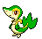
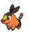
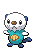
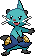

-
Snivy #495
- Grama
Being exposed to sunlight makes its movements swifter. It uses vines more adeptly than its hands.
-
Servine #496

- Grama
It moves along the ground as if sliding. Its swift movements befuddle its foes, and it then attacks with a vine whip.
-
Serperior #497

- Grama
It only gives its all against strong opponents who are not fazed by the glare from Serperior's noble eyes.
-
Tepig #498
- Fogo
It can deftly dodge its foe's attacks while shooting fireballs from its nose. It roasts berries before it eats them.
-
Pignite #499

- Fogo
- Lutador
The more it eats, the more fuel it has to make the fire in its stomach stronger. This fills it with even more power.
-
Emboar #500

- Fogo
- Lutador
It can throw a fire punch by setting its fists on fire with its fiery chin. It cares deeply about its friends.
-
Oshawott #501
- Água
It fights using the scalchop on its stomach. In response to an attack, it retaliates immediately by slashing.
-
Dewott #502
- Água
Strict training is how it learns its flowing double-scalchop technique.
-
Samurott #503

- Água
In the time it takes a foe to blink, it can draw and sheathe the seamitars attached to its front legs
-
Mewtwo #150

- Psíquico
Its DNA is almost the same as Mew's. However, its size and disposition are vastly different.